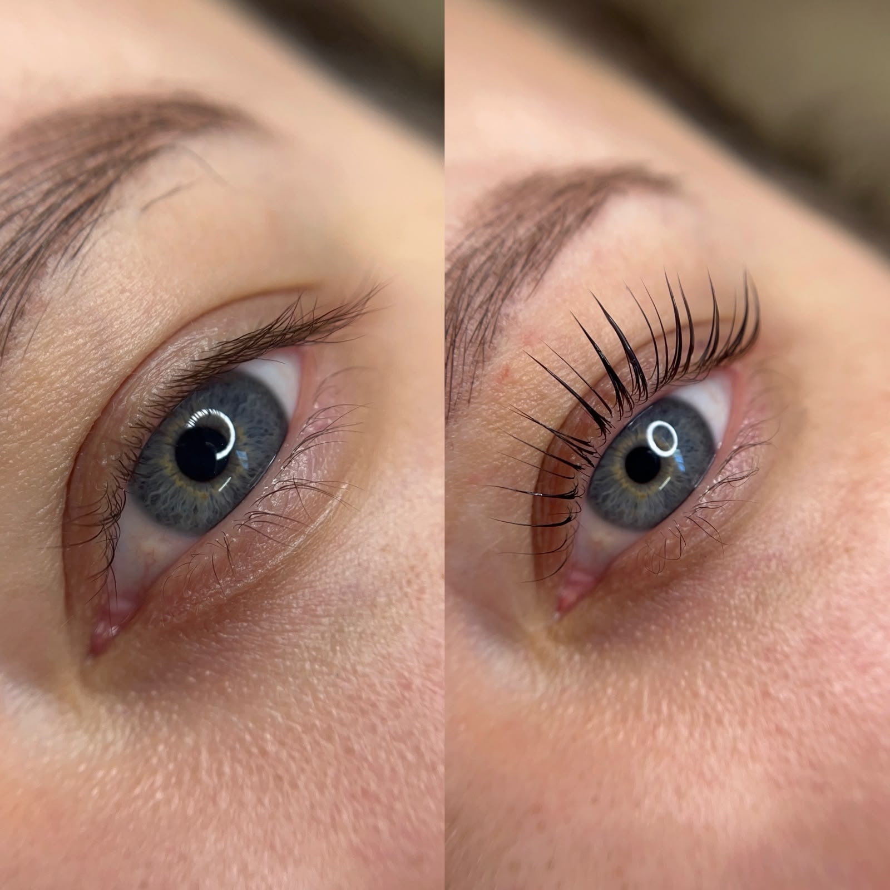
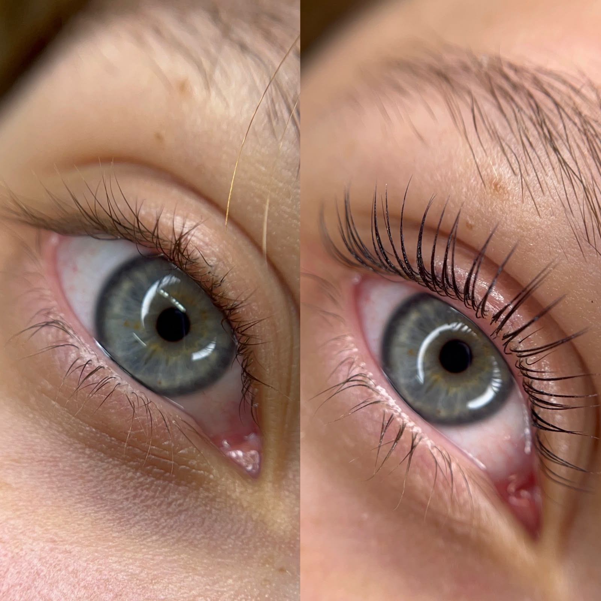
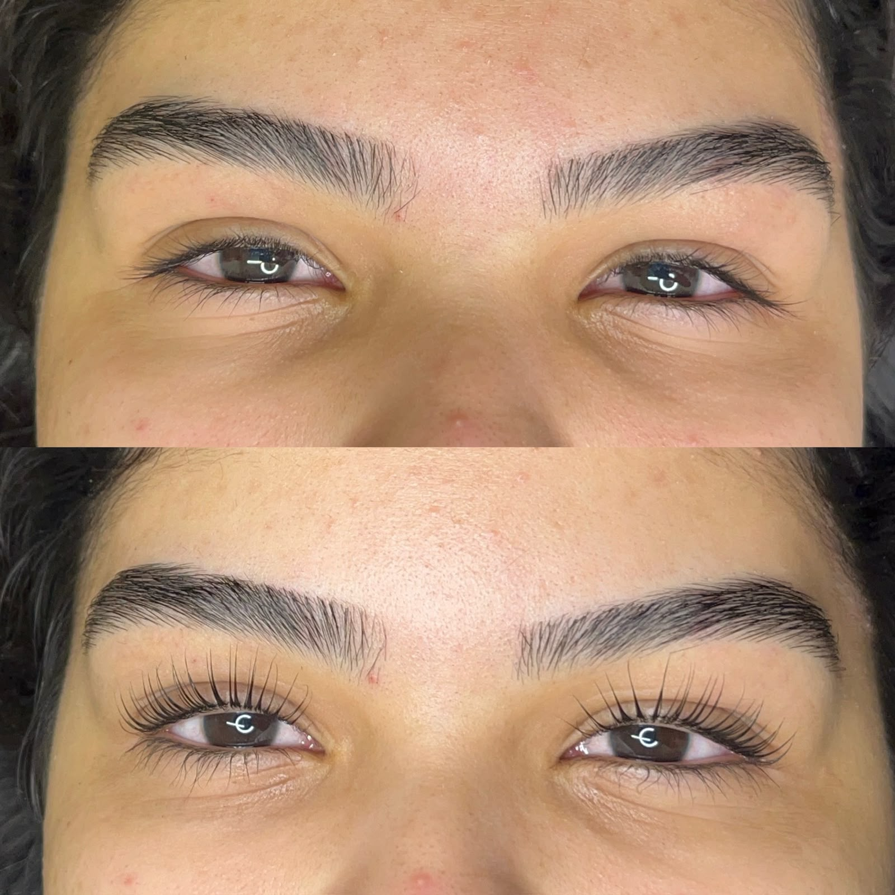
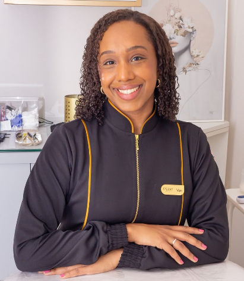
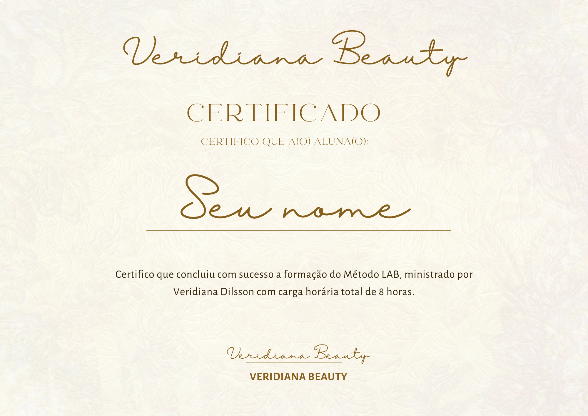

Chega de trabalhar na incerteza. Aprenda a técnica de Lash Lifting do zero à prática.



Eu sei, já passei por esses perrengues:
A verdade é que te ensinaram uma receita de bolo.
Não é preciso experiência prévia em lash lifting — o curso começa do fundamento e leva até a prática supervisionada.
Empreendedoras em busca de aumentar o faturamento na área da beleza
Lash designers que querem oferecer uma alternativa natural à extensão
Quem está começando na estética e busca uma especialidade de entrada
Mulheres que desejam trabalhar de forma autônoma e ter liberdade na agenda
Em cerca de uma hora de atendimento, permitindo encaixar mais clientes na agenda do dia.
Resultado visível na hora e efeito de semanas tornam o serviço fácil de vender para a cliente.
O efeito dura de 4 a 6 semanas, o que naturalmente traz a cliente de volta para manutenção.
Não exige equipamentos caros ou espaço grande — cabe em qualquer cadeira de atendimento.
A demanda cresce mais rápido que a oferta de quem executa a técnica com segurança.
Fácil de unir a sobrancelha e limpeza de pele, aumentando o ticket médio do atendimento.
O método Lash Beauty Artist foi criado após várias tentativas frustradas de entregar um resultado com excelência. Ao longo dos anos, iniciei a jornada de entender como aperfeiçoar a técnica, sem precisar trabalhar no achismo. O método LAB foi desenvolvido para te ensinar a ser uma profissional livre e segura dos seus resultados.
Do fundamento teórico à prática supervisionada — cada módulo constrói sobre o anterior.
Estrutura do fio, fases de crescimento e como identificar o tipo de cílio de cada cliente antes de iniciar o procedimento.
teoriaHigienização, organização da bancada e cuidados essenciais antes de qualquer atendimento.
teoriaComo adaptar a curvatura e o acabamento para valorizar cada formato de olho e entregar um resultado natural.
análiseO passo a passo exclusivo do Método LAB: escolha do molde, aplicação, tempos de pausa e neutralização — a técnica sem achismo.
práticaComo precificar o serviço, conduzir a conversa com a cliente e fidelizar para o retorno de manutenção.
negócioPrática supervisionada com acompanhamento próximo e entrega do certificado de conclusão.
certificaçãoCertificado de conclusão
Apostila digital completa
Aulas gravadas
Suporte pós-curso de 6 meses

À frente da Veridiana Beauty, atende clientes de lash lifting, sobrancelhas e face — e agora leva essa vivência de bancada para dentro do curso, com uma didática pensada para quem vai sair de lá atendendo.
Iniciou sua jornada no Lash Lifting em 2019, especializou-se junto às referências da área da beleza e hoje traz o Método LAB para dentro da sala de aula.
A proposta é simples: nada de teoria solta. Cada módulo existe porque resolve uma dúvida real de atendimento.
O resultado impecável não é o acaso.
É método.

Turmas pequenas para garantir atenção individual em cada etapa da prática.
Vagas limitadas por turma
Não. O curso começa pelos fundamentos e caminha até a prática supervisionada, então quem está começando também acompanha bem.
Você tem acesso às aulas gravadas e à apostila digital por 1 ano após a inscrição, podendo rever o conteúdo sempre que precisar.
Sim, todas as alunas que concluem a prática supervisionada recebem certificado de conclusão.
O módulo de precificação e atendimento foi criado justamente para isso — sair do curso já sabendo como conduzir o primeiro atendimento real.